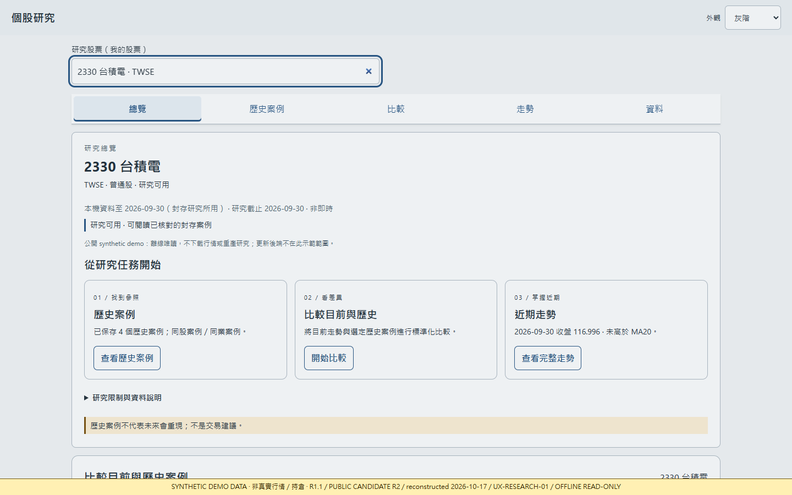
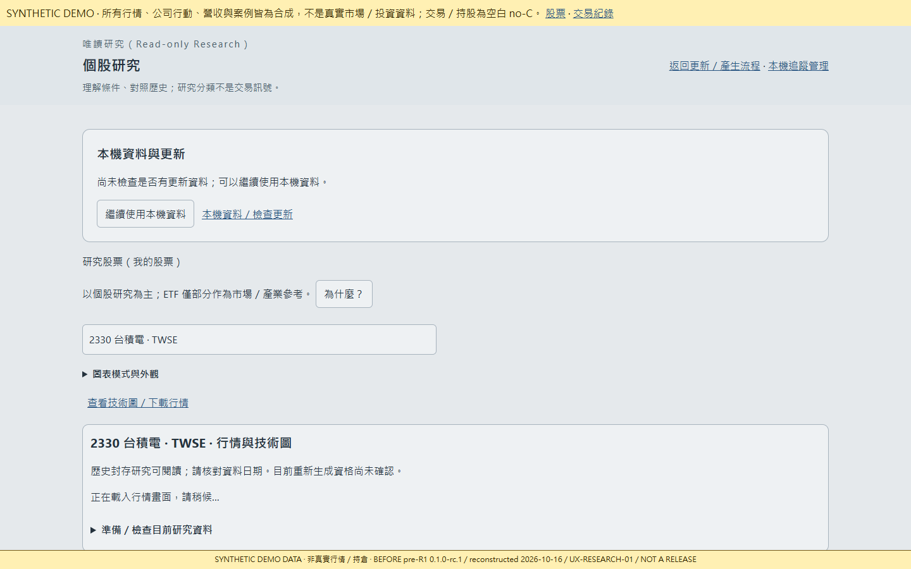
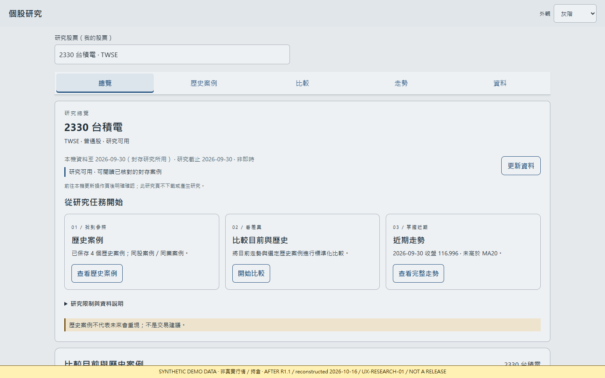

01 / FEATURED PROJECT 主要作品
TRADE金融資料研究與整理工具
讓分散的研究資訊有一個清楚的入口：
找到標的、理解資料，再比較歷史脈絡。
研究介面 / 公開合成示範

以上為既有介面的合成示範截圖（R1.1 / Public Candidate R2），非真實行情、持股或投資績效，亦非最新私人測試版。圖表原有歸屬標示完整保留。素材與使用說明 ↗
資料整理與呈現
將標的搜尋、研究總覽、歷史案例與比較畫面串成可閱讀的研究流程。
保留資料脈絡
呈現資料時間、來源與不足狀態，避免把舊資料或歷史結果誤認為即時資訊與預測。
我的參與
定義使用需求、規劃資訊層次，透過實際操作與畫面檢視提出修改方向。
A SMALL CHANGE, MADE VISIBLE
讓研究入口，
更容易找到。
用保留的畫面說明改善，
不以未經量測的數字包裝成果。
問題
舊介面仰賴選單與捲動，研究與比較入口較分散。
改善方式
改以研究任務安排總覽，將常用入口集中到首屏。
實際成果
可直接對照改版前後的版面與導覽。尚無省時比例或使用成功率的量測結果。


版本、驗證範圍與限制
本機基礎版本標示為 0.1.0-rc.1，另有持續迭代的研究工作區。較新的 UI／圖表範圍已有技術驗證紀錄；真實資料更新與正式交易資料整合仍有未完成範圍。
此處只呈現既有核准公開範圍內的合成畫面；不提供私人研究服務、帳戶資訊或真實資料下載。歷史案例不代表未來機率，研究結果不構成投資建議。